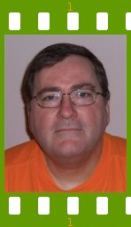

People of openSUSE: Keith Kastorff

The ‘People of openSUSE’ publishes this week one more interesting interview, one of the most active openSUSE community members – Keith Kastorff – the man who has his own Beagle and spends his time helping people at SUSE Forums.
- Nicknames: kastorff, sparse_array
- Homepage: www.kastorff.com
- Blog: I update it so infrequently I’m ashamed to say, but it’s www.kastorff.net
- Favorite season: autumn – I love the change of seasons the best, and there’s no pollen in the fall.
- Motto: “Manage the details, and the big stuff will take care of itself.”
Please introduce yourself!
I’m a information technology professional living in Roswell, GA (USA). I have my own business, and mostly work out of my home. I’m a divorced father, with one son, age 18. My Beagle Charlie is my constant companion.
Tell us about the background to your computer use.
I have a computer science degree with a minor in mathematics, and extensive coursework in electrical engineering. My first PC was a Commodore 64, and I’ve used all sorts of environments since; various machines running DOS, Windows, UNIX, Mac OS, and Linux.
When and why did you start using openSUSE/SUSE Linux?
About 4 years ago, my son was tinkering about with Debian, and I decided it was time for me to learn Linux. I had some UNIX background, and I figured it would be fairly easy leveraging what I knew over to Linux. I did a bit of research and decided SuSE Linux represented a good choice. I liked the fact I could get a boxed set with manuals. I bought a copy of SuSE 9.0 and loaded it in a dual boot configuration with my daily OS at the time, Windows XP Professional. I’ve used every flavor of SUSE since.
When did you join the openSUSE community and what made you do that?
Since I was heavily involved in the SUSE forums community when the openSUSE community started up, it was pretty automatic.
In what way do you participate in the openSUSE project?
I’m an administrator on suseforums.net.
What especially motivates you to participate in the openSUSE project?
It’s the historical precedent those who came long before me set in helping others learn and use Linux. I was helped when I needed it (and I needed a lot). I wanted to give some of that back.
What do you think was your most important contribution to the openSUSE project/community or what is the contribution that you’re most proud of?
Oh I don’t know. I don’t think of myself as being important to the openSUSE community. If I was forced to say something, I’d have to say it’s not one thing, maybe a number of small things…but if anyone knows me at all it’s because I help run a SUSE focused discussion community.
When do you usually spend time on the openSUSE project?
If by spending time on the openSUSE project we mean suseforums.net, it’s every day, multiple times a day.
Three words to describe openSUSE? Or make up a proper slogan!
stable, polished, comprehensive
What do you think is missing or underrated in the distribution or the project?
I think folks used to other distributions don’t allow for how polished openSUSE is. It’s professionally done, with great attention to detail at all levels, not just the surface stuff. It “feels” like no other Linux.
What do you think the future holds for the openSUSE project?
The sky’s the limit. The combination of Novell and the openSUSE community working together gives openSUSE a potential few other distros can even contemplate.
A person asks you why he/she should choose openSUSE instead of other distribution/OS. What would be your arguments to convince him/her to pick up openSUSE?
It’s the most flexible binary distribution in existence. Most distros are focused on beginners or intermediate/advanced users. openSUSE is easy enough to use for beginners, yet offers the power and flexibility to satisfy an advanced user.
Which members of the openSUSE community have you met in person?
None, but with IRC, IM, forums, email, mailing lists, USENET and such, I feel like I have. :)
How many icons are currently on your desktop?
On my openSUSE 10.3 Gnome desktop I have 6 – Computer, Home, Network Servers, Online Help, openSUSE, Trash
What is the application you can’t live without? And why?
Evolution – because it collects and manages so much information critical to everyday life. I’m a big fan of PIMs in general, whether they are independent apps that are consolidated by function, bundled in an interface like KDE does it, or in an all-in-one package like Evolution.
Which application or feature should be invented as soon as possible?
Global data integration – we need single standard data stores for email, calendar, contacts, todos, notes…and standard ways to link and share these types of information across applications, even running on different operating systems. We shouldn’t still be locked into particular applications or systems to access the information we use to run our lives. We’re always making progress towards this goal, but never quite getting there.
Which is your preferred text editor? And why?
vim – it runs on any platform I use, and it can handle anything I throw at it.
Which famous person would you want to join the openSUSE community?
all of them? ;)
Which computer related skills would you like to have?
I’m pretty much a jack of all trades as an IT person. I can do about anything given enough time, but I’m not an expert in anything. I’d like to be a better programmer.
The Internet crashes for a whole week. How would you feel, what would you do?
So much of my day involves the Internet in one way or another, it would really limit what I normally do. I’d spend more time with my dog, and read some of those books in the “to be read” stack.
Which is your favorite movie scene?
I’m sure there are some older movies with scenes I might like better, but the one that comes to mind is the one where Bruce Willis takes out a terrorist helicopter with a police car in “Live Free: Or Die Hard”.
Star Trek or Star Wars?
Star Trek
What is your favorite food and drink?
Mexican food, beer
Favorite game or console (in your childhood and nowadays)?
I’m a big fan of strategy/simulation games, like Age of Empires and Rise of Nations, StarCraft, or SimCity. When I was a kid, I didn’t play computer games much…I was really into scale modeling, sports, cycling, and reading.
Which city would you like to visit?
Sydney, Australia.
What is your preferred way to spend your vacation?
For the most part, I like mountains better than beaches, so some time in a cabin with a scenic view would suit me fine…catch up on reading, walk about, and enjoy the smells and sights. Of course, after about 3 days, I’d be looking for a broadband connection. (lol)
Someone gives you $1.000.000. What would you do with the money?
I’d make sure my son was set up for life, and I’d build a modest house halfway between somewhere and nowhere in East Tennessee and finish that novel.
If traveling through time was possible, when would we be most likely to meet you?
Somewhere in the future. I’d have to see what’s down the road…I’d probably start about 2050, and explore from there.
There’s a thunderstorm outside. Do you turn off your computer?
Depends on how close the lightning is. Typically, no.
Have your ever missed an appointment because you forgot about it while sitting at your computer?
Nope.
Show us a picture of something, you have always wanted to share!
(still thinking of something to go here)
You couldn’t live without…
My family, friends, and dog.
Which question was the hardest to answer?
“Show us a picture…you have always wanted to share!”
What other question would you like to answer? And what would you answer?
What’s better, KDE or Gnome? Actually, like a lot of folks, my answer is “both, or whatever you like best”, but I really wish we could just ban the question. :)